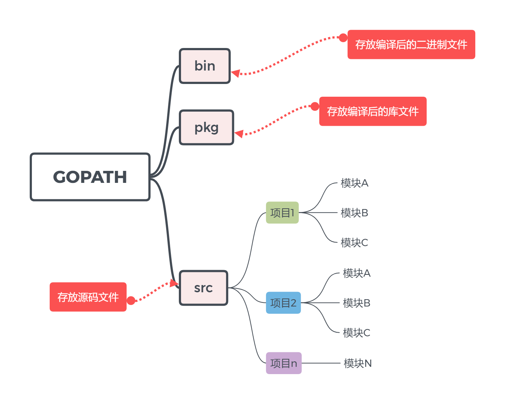
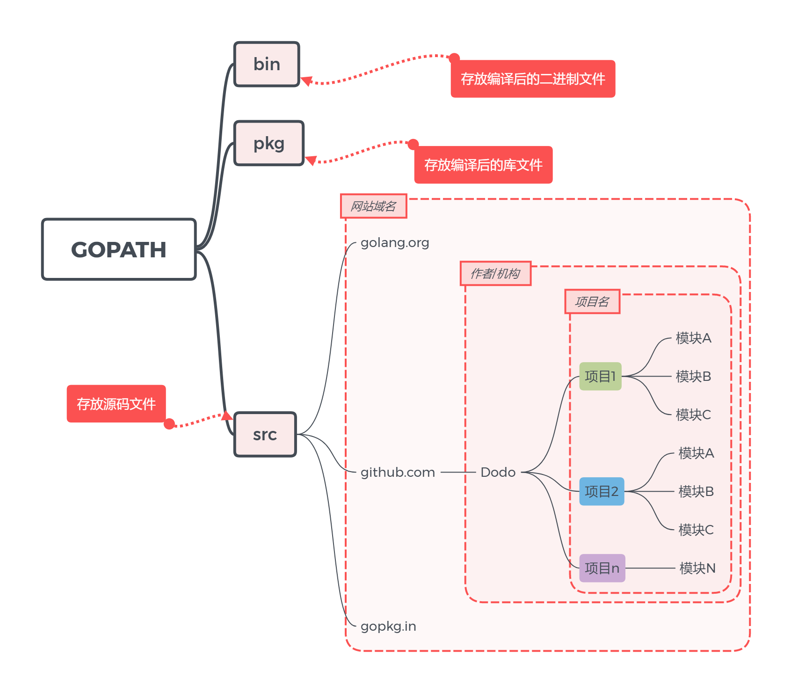
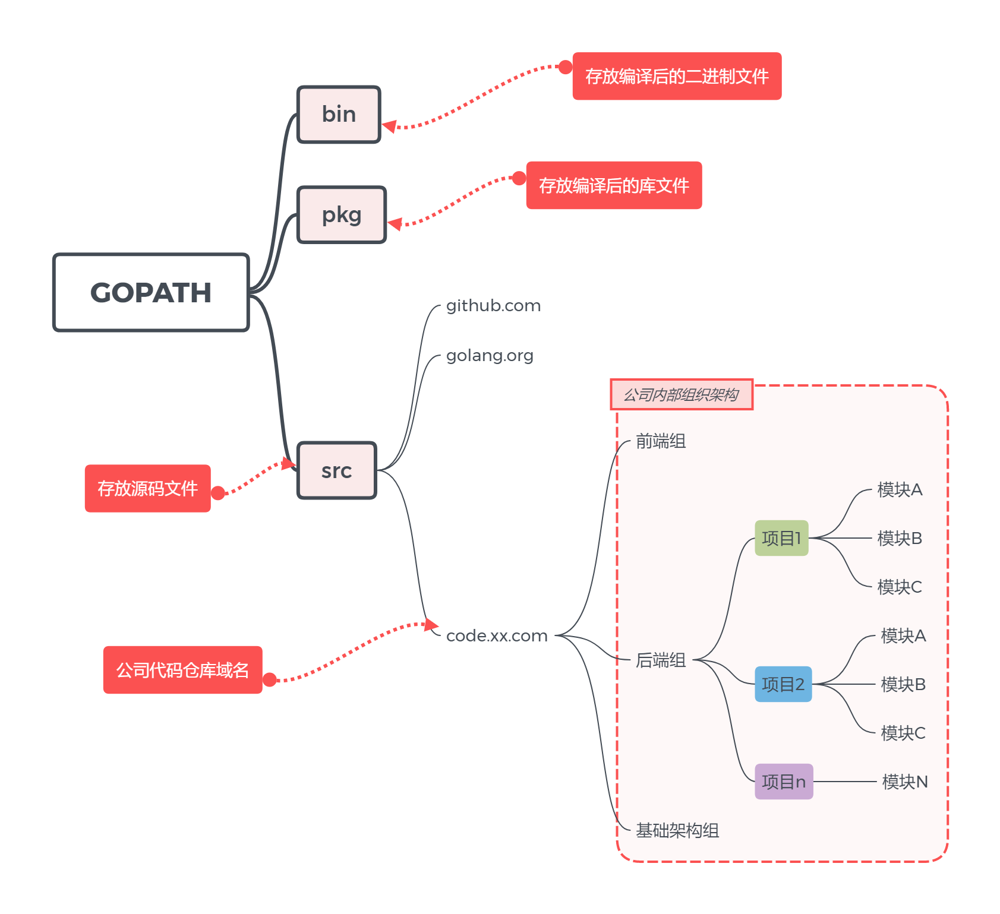

下载
安装测试
- 安装Go语言环境；
- 在
cmd窗口中输入go version来测试安装是否成功，输出go version go1.14 windows/amd64代表安装成功。
配置GOPATH
GOPATH是一个环境变量，用来表明Go语言项目保存的路径。GOPATH路径最好只设置一个，所有的项目代码都放到GOPATH的src路径下。- 创建一个文件夹
.\Go，创建一个环境变量，变量名为GOPATH，变量内容为这个文件夹的路径。 - 在 Go 1.8 版本之前，
GOPATH环境变量默认是空的。从 Go 1.8 版本开始，Go 开发包在安装完成后会为GOPATH设置一个默认目录，参见下表，可以把自动创建的GOPATH变量删掉。
| 平台 | GOPATH默认值 | 举例 |
|---|---|---|
| Windows | %USERPROFILE%/go | C:\Users\dodo\go |
| Unix | $HOME/go | /home/dodo/go |
- 在
GOPATH目录下新建三个文件夹：bin：用来存放编译后生成的可执行文件；pkg：用来存放编译后生成的归档文件；src：用来存放源码文件。
- 把上面创建的
.\Go\bin添加到系统的PATH环境变量中。 - 设置完环境变量后，重新打开一个
cmd，输入go env，可以查看Go语言的环境变量。其中GOPATH是要写代码的位置，GOROOT是安装Go语言环境的位置。
Go项目的目录结构
在进行Go语言开发的时候，我们的代码总是会保存在$GOPATH/src目录下。在工程经过go build、go install或go get等指令后，会将下载的第三方包源代码文件放在$GOPATH/src目录下， 产生的二进制可执行文件放在 $GOPATH/bin目录下，生成的中间缓存文件会被保存在 $GOPATH/pkg 下。
如果我们使用版本管理工具（Version Control System，VCS。常用如Git）来管理我们的项目代码时，我们只需要添加$GOPATH/src目录的源代码即可。bin 和 pkg 目录的内容无需版本控制。
适合个人开发者
我们知道源代码都是存放在GOPATH的src目录下，那我们可以按照下图来组织我们的代码。

目前流行的项目结构
Go语言中也是通过包来组织代码文件，我们可以引用别人的包也可以发布自己的包，但是为了防止不同包的项目名冲突，我们通常使用顶级域名来作为包名的前缀，这样就不担心项目名冲突的问题了。
因为不是每个个人开发者都拥有自己的顶级域名，所以目前流行的方式是使用个人的github用户名来区分不同的包。

适合企业开发场景
